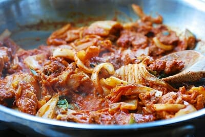
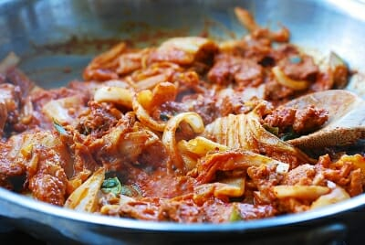

Details
- Total Time: 20 minutes
- Servings: 2
- Serve warm
Ingredients
- 2 cups fully fermented kimchi
- 1/2 pound thinly sliced pork or pork belly
- 1/2 onion
- 2 scallions
- 1 teaspoon grated ginger
- 1 tablespoon minced garlic
- 1 tablespoon soy sauce
- 1 tablespoon sugar
- 1 tablespoon sesame oil
- 2 - 3 tablespoons gochujang (고추장), Korean red chili pepper paste
- 1 teaspoon sesame seeds
- pinch pepper
- 1 18- oz package tofu
Reference images
 

Instructions
- Cut kimchi and pork into bite sizes. Thinly slice onion and scallions. In a large bowl, combine kimchi, pork, onion, scallions and the remaining ingredients and mix well. Let it stand for 15 minutes.
- In a medium size pot, bring about 4 cups of water to a boil. Cut the tofu into two blocks. Reduce the heat to medium high, and add the tofu. Gently boil for 5 minutes. Carefully transfer the tofu to a colander to drain. Cut each block into about 1/2-inch thick slices.
- Heat a large pan over medium high heat and add the kimchi and pork mix. Cook until the kimchi becomes soft, the pork is cooked through, and most of the liquid generated during the cooking process is evaporated, about 5 - 6 minutes.
- Arrange the tofu slices nicely on a plate leaving an open space in the middle part. Place the stir-fried kimchi and pork in the middle and serve. Or, you can serve the stir-fried kimchi and tofu side by side.
Reference Recipe Sites
China Sichuan Food
I like how the author here includes a lot of process images in her recipes. Additionally, I really love how the "recipe" portion at the bottom of the page does not include any images – there is a clear separation between the process description and the recipe card itself, which I feel makes it at lot easier to read.
Sally's Baking Addiction
I think there is a really clear separation between ingredients, instructions, and notes. Additionally, although this may not be too important for this assignment, I think the author effecitvely markets the other recipes on her page by linking several related pages on every recipe.
Bon Appetit
I've always thought Bon Appetit's site is very simple and pleasing – the large images with just the recipe names are still intruiging enough for readers to click in. It keeps a very consistent visual pattern of one big image and one big label of a similar size throughout the page, which unifies the content.
Reference Non-Recipe Sites
Forbes
I like the grid system on Forbes – despite having multiple nmbers of columns for different parts of the page, it remains readable and clean. I think the treatement of image alignment is interesting, as it stays orderly and clear which text goes with what image despite not as aligned as, say, Bon Appetite.
ANML
ANML is a local design firm from where I'm from. I think the opening page animation is eye-catching and would be a fun way to display the images for the recipe, adding some fun interactive features for a user.
Beauty Archive
I've used this website as inspiration an embarrassing amount of times. I've always loved the image treatment and how it juxtaposes round and squared-off borders. In addition, I think the hierarchy is clear, and the text is eye-catching without being overwhelming.